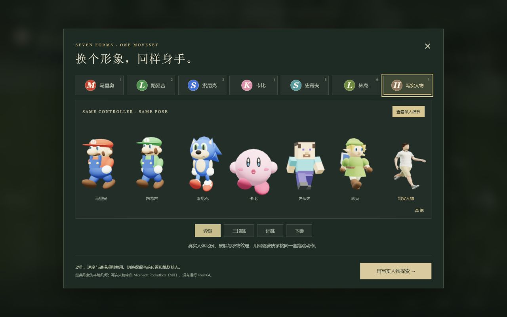
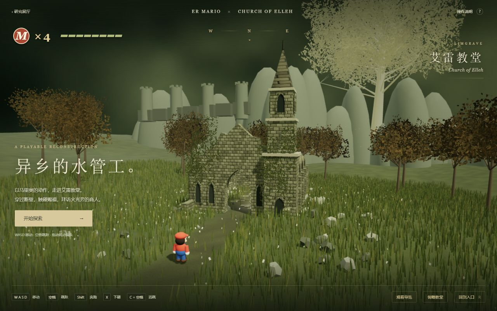
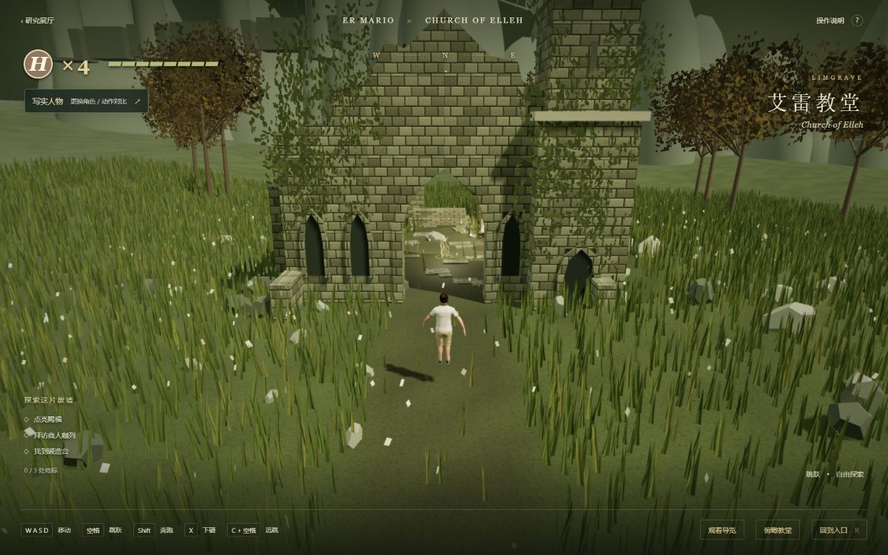
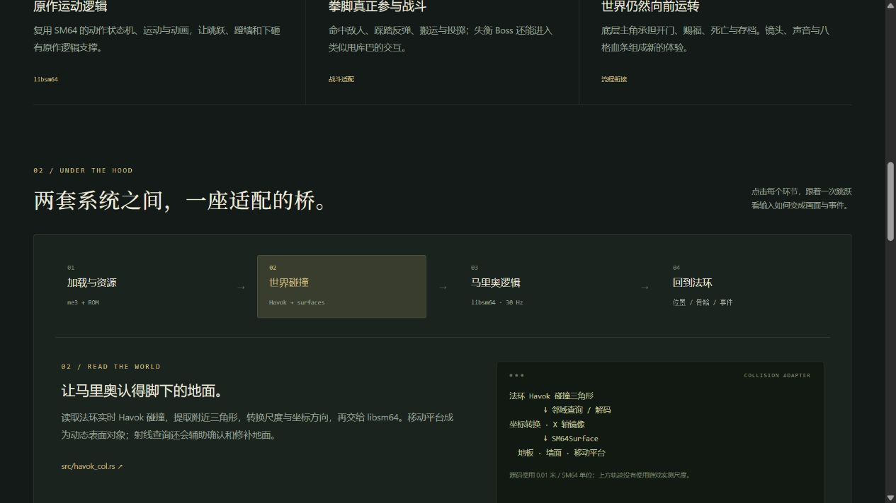

真实运行 libsm64
面向法环的 Rust 模组，适配原作运动、动画、碰撞、骨骼与战斗流程。
ONE MOVESET · DIFFERENT BODIES & WORLDS
er-mario 复用 libsm64 的原作运动与动画，把《超级马里奥 64》的动作能力，接入《艾尔登法环》的地形、角色、战斗与游戏流程。
核心工程价值在于成熟行为与宿主世界的连接。我们的浏览器探索进一步展示：同一套本地控制逻辑，可以适配六个经典形象和一个写实人物。
面向法环的 Rust 模组，适配原作运动、动画、碰撞、骨骼与战斗流程。
自实现浏览器控制器与姿态接口；教堂可探索、模型可切换，未运行游戏模组。
更多人物、地图或游戏，需要关节映射与宿主接口；自然动作还需要额外设计。
01 / CAPABILITIES
能力来自固定版本说明与源码。
本项目没有在本机运行法环模组。
原作三段跳、远跳、蹬墙、下砸及拳脚、踩踏，由 libsm64 运动状态与动画驱动。
运动循环源码 ↗读取法环的 Havok 碰撞，转换坐标、尺度与表面格式；同步动态物体，让动作能在宿主世界落地。
碰撞适配源码 ↗把 SM64 部件姿态映射到宿主骨骼；运动逻辑以 30 Hz 更新，再插值显示位置。
骨骼适配源码 ↗拳脚、踩踏和下砸转为比例扣血，再接入宿主受击、击杀与掉落；支持敌人搬运及特定失衡 Boss 甩投。
战斗适配源码 ↗底层褪色者作为代理。自由运动时跟随马里奥，开门、爬梯等事件期间协调控制权，衔接赐福、死亡与存档。
事件协调源码 ↗接入 SM64 的声音、八格生命值与 Lakitu 镜头；资源由玩家自己的美版 ROM 在本机准备。
上游能力与运行条件 ↗02 / HOW IT WORKS
输入与碰撞进入动作核心，
位置、姿态与命中结果回到宿主。
法环 Havok 世界
↓ 读取附近碰撞
坐标 / 尺度 / 表面格式转换
↓ 同步动态物体
libsm64 可理解的表面工程并不止于一个角色模型：碰撞格式、逻辑时序、骨骼姿态、战斗命中和事件控制权，都需要宿主适配。
03 / WHAT WE BUILT
以下画面均来自本地浏览器演示。
场景为参考重建，控制器由本项目实现。

同一个 Controller → 同一个 pose() → 各模型关节适配。预览奔跑、三段跳、远跳与下砸，数字 1–7 快速换人。



验证记录截至 2026-10-15：桌面、390 × 844 手机、触屏跳跃、切换运动状态与骨骼隔离均已检查。相同碰撞体用于比较，宽体形象仍可能发生视觉穿插。查看记录
04 / WHY IT MATTERS
成熟动作可以成为基础，把投入集中到宿主接口、角色表现和新玩法。
三段跳、蹬墙与下砸会改变路线、障碍和接近敌人的方式。
相同控制逻辑可比较不同身体比例，模型外形与动作规则分别演进。
碰撞、坐标、时序、骨骼与事件之间的联系，可以学习、验证和交流。
05 / WHERE IT CAN GO
以下为有条件的工程方向。
现有实现仍围绕具体模型与环境。
导入模型、统一尺度、映射语义关节，检查蒙皮变形与身体穿插。
加入动画重定向、IK 落脚、重心和肘膝处理，再调整运动参数。保留夸张跑跳与追求自然动作，是不同目标。
制作建筑、地形与碰撞，解决镜头遮挡、动态物体和地标交互。
增加动作状态和过渡、命中检测、反馈与交互，再验证动作之间的协作。
重做输入、坐标、碰撞、骨骼渲染、战斗和事件接入；法环专属适配层不能直接照搬。
抽离控制、姿态和环境协议，建立模型规范、调参工具与自动验证，用于虚拟展厅或交互原型。
06 / SCOPE & CONDITIONS
Steam 法环、自有美版 SM64 ROM、me3。按上游要求离线运行、关闭反作弊并使用独立存档。
已知问题包括部分电梯穿透、过场变形、甩投布娃娃异常和阴影闪烁，本项目未在本机复测。
运行浏览器中的自实现运动与姿态；没有调用游戏进程、ROM、模组 DLL 或 libsm64。
教堂为参考重建，未实现完整战斗 AI、装备强化、商店经济、存档和完整关卡。
写实模型已验证骨骼映射；自然的人体运动还需要动画、落脚和重心设计。
更多模型或环境需要具体适配。这里没有验证真人动作捕捉、真实机器人控制或生物力学准确性。
07 / SOURCE & EVIDENCE
模组自有代码为 MIT，libsm64 保留 CC0；游戏资源不属于模组许可。作者两条 X 演示媒体目前已停用，保留来源记录，未作为本项目实机验证。全部本地画面均独立标注。